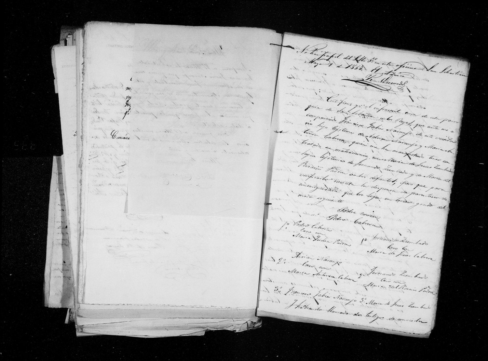

269 personas. Las generaciones antiguas y las ramas de Telde y Las Palmas proceden del árbol de Cristo Santana Naranjo en Geneanet, basado en el libro Historia de los Naranjo en Canarias de Miguel Rodríguez Díaz de Quintana. La rama de Pinar del Río, la de Venezuela y los padres de Quirina son de nuestra investigación. Solo se publican datos de personas fallecidas.
Novedades
Lo más reciente que se ha incluido en la web, de lo más nuevo a lo más antiguo. Ver todas.
22nov2026 Documentos8 documentos de Salvador en VenezuelaSu llegada a La Guaira (1835), el expediente de soltería y la boda de 1862, bautismos de sus hijos y entierros en La Victoria.22nov2026
Documentos8 documentos de Salvador en VenezuelaSu llegada a La Guaira (1835), el expediente de soltería y la boda de 1862, bautismos de sus hijos y entierros en La Victoria.22nov2026 DocumentosManuel: soltería de 1872 y bautismos de sus hijosEl expediente dice que su padre Adrián seguía vivo en Gran Canaria en 1872. Con los bautismos de Ignacio, Adrián y Luisa Elena.22nov2026
DocumentosManuel: soltería de 1872 y bautismos de sus hijosEl expediente dice que su padre Adrián seguía vivo en Gran Canaria en 1872. Con los bautismos de Ignacio, Adrián y Luisa Elena.22nov2026 DocumentosLa boda de Pedro Cabrera (1860)El hermano de Josefa Antonia se casa en La Victoria; la partida confirma que su madre se llamaba María Isidora Padrón.22nov2026✥WebLas generaciones, en el árbolCada fila del árbol indica su generación, contada desde Diego Pérez Naranjo (h. 1470): Félix y Rosalía son la XII.
DocumentosLa boda de Pedro Cabrera (1860)El hermano de Josefa Antonia se casa en La Victoria; la partida confirma que su madre se llamaba María Isidora Padrón.22nov2026✥WebLas generaciones, en el árbolCada fila del árbol indica su generación, contada desde Diego Pérez Naranjo (h. 1470): Félix y Rosalía son la XII.
Documentos8 documentos de Salvador en VenezuelaSu llegada a La Guaira (1835), el expediente de soltería y la boda de 1862, bautismos de sus hijos y entierros en La Victoria.22nov2026
Documentos4 documentos de Francisco Javier en AraguaSoltería y dispensa de 1857 con el árbol de los Cabrera, su entierro con música (1866) y la boda y el entierro de su hija.22nov2026DocumentosManuel: soltería de 1872 y bautismos de sus hijosEl expediente dice que su padre Adrián seguía vivo en Gran Canaria en 1872. Con los bautismos de Ignacio, Adrián y Luisa Elena.22nov2026DocumentosLa boda de Pedro Cabrera (1860)El hermano de Josefa Antonia se casa en La Victoria; la partida confirma que su madre se llamaba María Isidora Padrón.22nov2026✥WebLas generaciones, en el árbolCada fila del árbol indica su generación, contada desde Diego Pérez Naranjo (h. 1470): Félix y Rosalía son la XII.La familia, de otro modo
Las rutas de la familia
De Telde a Venezuela desde 1835, y a Cuba en el Trinidad en 1878. Ver los viajes.